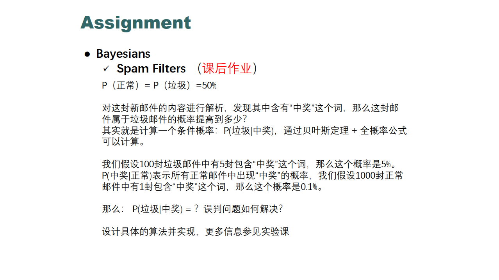

朴素贝叶斯分类器

理论求解
根据题意：
100封垃圾邮件中有5封包含“中奖”，则P(中奖|垃圾) = 5%
1000封正常邮件中有1封包含”中奖”，则 P(中奖|正常) = 0.1%
假设“邮件是垃圾邮件”为事件$ B{1} $，“邮件是正常邮件”为事件$B{2}$，“邮件中含有‘中奖’这一关键词”为事件$A$。
我们有$P(B{1})=P(B{2})=50\%$，$P(A|B{1})=5\%$，$P(A|B{2})=0.1\%$
则根据贝叶斯定理：
我们能够推导出
综上，若一封邮件出现“中奖”这个关键词，这封邮件有98%的概率是垃圾邮件。
算法设计与实现
朴素贝叶斯分类器（NBC）
算法原理
公式推导：
贝叶斯定理见理论分析部分
特征条件独立假设
对于新样本$x$，从概率的角度来看，问题是给定$x$后分析它属于哪个类别的概率最大
，即求解$max\ x_{y_k}P(y_k|x)$
由全概率公式得出$P(y_k|x)=\frac{P(x|y_k)P(y_k)}{∑_kP(x|y_k)P(y_k)}$
根据独立性假设，将$P(x|yk)=P(x_1,x_2,…,x_n|y_k)=∏^n{i=1}P(x_i|y_k)$带入上式
得到朴素贝叶斯分类器的表达式为$max\ P(yk)∏^n{i=1}P(x_i|y_k)$
当特征是离散的时候，使用多项式模型。多项式模型在计算先验概率$P(y_k)$和条件概率$P(x_i|y_k)$时，会做一些平滑处理，这里采用拉普拉斯平滑，即平滑值等于1。
$P(yk)=\frac{N{y_k}+α}{N+kα}$
$P(xi|yk)=\frac{N_{yk,xi}+\alpha}{αNyk+nα}$
其中，N是总的样本个数，k是总的类别个数，$N_{yk}$是类别为$y_k$的样本个数，α是平滑值。
如果不做平滑，当某一维特征的值$x_i$没在训练样本中出现过时，会导致$P(x_i|y_k)=0$，从而导致后验概率为0。加上平滑就可以克服这个问题。
拉普拉斯平滑：
假定训练样本很大时，每个分量x的计数加1造成的估计概率变化可以忽略不计，但可以方便有效的避免零概率问题。
流程
学习阶段：
- 读入训练集并将其转换为矩阵
定义相关变量并初始化
计算P(垃圾邮件中的单词|垃圾邮件)和P(正常邮件中的单词|正常邮件)
- 使用拉普拉斯平滑避免出现概率为0
测试阶段
- 读取测试集并对数据进行处理(矩阵化)
- 遍历所有邮件，通过”单词数$\times$P(单词|垃圾邮件)”计算每个邮件是垃圾邮件的概率;同理计算它是正常邮件的概率。
- 使用多项式模型。 “垃圾邮件单词总数 / (垃圾邮件单词总数+正常邮件单词总数)”和”正常邮件单词总数 / (垃圾邮件单词总数+正常邮件单词总数)”
伪代码
1
2
3
4
5
6
7
8
9
10
11
12
13
14
15
16
17
18
19
20
21
22
23
24
25
26
27# 学习
function Train
data=read data # 获取训练集
label=read label # 获取对应的邮件标签
Traversal data
IF Label[index] == spam
SpamWords+= WordNum
IF Label[index] == normal
normalWords+= WordNum
Traversal words
compute p(world|spam) # 采用多项式模型和拉普拉斯平滑
compute p(world|normal)
end function
# 测试
function Test
data=read data # 获取测试集
Traversal email IN data
Traversal word IN email
compute p(spam)
compute p(normal)
IF p(spam)> p(normal)
this emal is a spam
ELSE
this email is normal
end function运行结果
A*算法
算法设计与实现
算法原理
A*（A-Star)算法是一种静态路网中求解最短路径最有效的直接搜索方法，也是许多其他问题的常用启发式算法。
公式表示： f(n)=g(n)+h(n)， f(n) 是从初始状态经由状态n到目标状态的代价估计，g(n) 是在状态空间中从初始状态到状态n的实际代价，h(n) 是从状态n到目标状态的最佳路径的估计代价。
创建两个list，open list保存所有已生成而未考察的节点，close list中记录已访问过的节点。
从openlist 中选取f(n)最小的节点计为best,并加入close list 直到走到终点。
对于新加入close lists的节点(best节点)，找出其相邻节点并进行遍历。若当前节点在openlist 中，则若best的代价比当前节点的父节点代价小，则当前节点的父节点置为best;若当前节点已经在close list中则跳过;若不在任何list中，则加入open list.
当close list节点能够走到终点算法结束。
流程

伪代码
1
2
3
4
5
6
7
8
9
10
11
12
13
14
15
16
17
18
19function A*
Initialize openList
Initialize closeList
Add Start Into openList
While openList is not EMPTY
bestNode=the node that has the smallest f(n) from openlist
Pop bestNode
Add bestNode Into closeList
if bestNode == Destination
break # 算法结束
get the adjacent node of bestNode
Traversal adjacent node of bestNode
IF node in openList
checkthe node.parent's f(n),change if necessary
IF node in closeList
continue
IF node not in openList&closeList
Add node Into openList
end While运行结果